When you visit a website, your browser shows the domain name (like google.com). Attackers can register domains that look identical to real ones by substituting characters from other languages — for example, using a Cyrillic а instead of the Latin a in apple.com. These are called IDN homograph attacks.
This extension inspects every domain name your browser visits and blocks or warns you when it detects characters that are likely part of a spoofing attempt.
A block page appears when the domain contains characters from scripts (writing systems) that you have not enabled in settings. For example, if a domain contains Cyrillic characters and you have not enabled Russian, it is blocked.
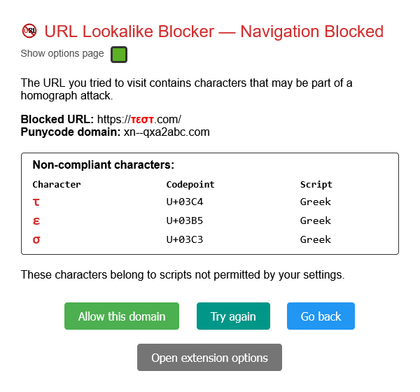
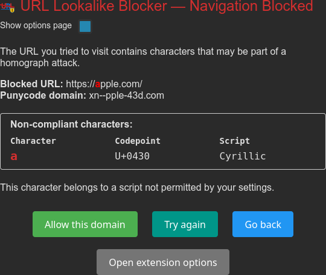
A warning page appears when the domain mixes scripts in a way that suggests a homograph attack. Warning pages can appear even if you have the relevant scripts enabled, because legitimate sites do not normally mix scripts within a single domain label. There are two flavours depending on what the extension detected.
This appears when a domain contains a character that visually resembles a Latin letter — for example the Cyrillic р mimicking p in рaypal.com. The confusable character is highlighted in red and the lookalike is shown (e.g. "Looks like: p").
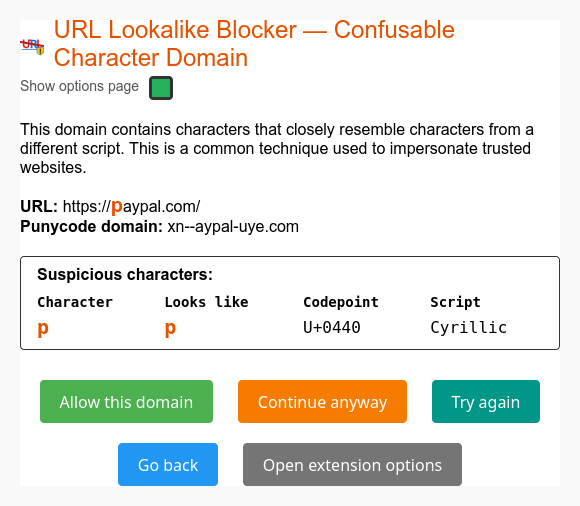
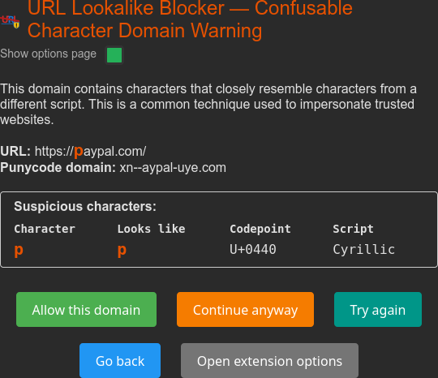
This appears when a domain label mixes characters from two or more scripts that are not commonly combined — for example Latin and Cyrillic together in testж.com. The non-Latin characters are highlighted in amber. If enabling a specific language would permit this combination, that hint is shown (e.g. "enable Serbian in Extension Settings").
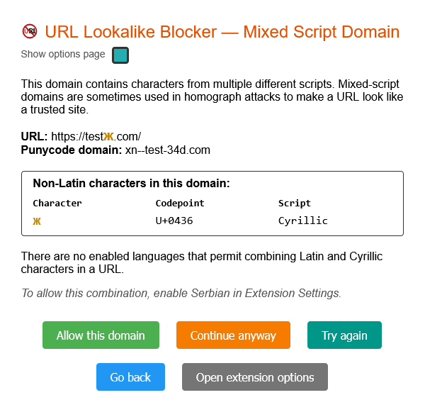
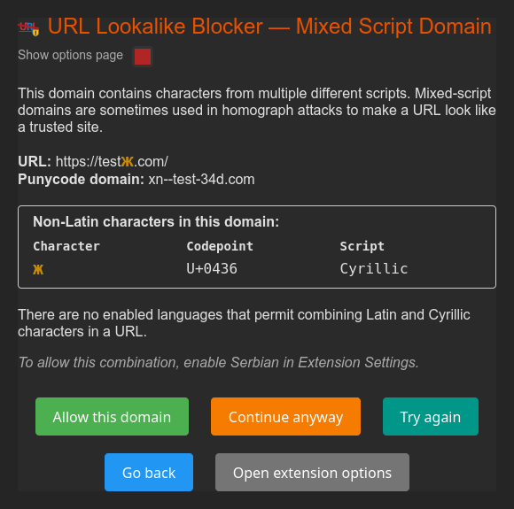
Left-clicking the extension icon in the toolbar opens the Options page. Right-clicking gives a small menu with Open Options and Help.
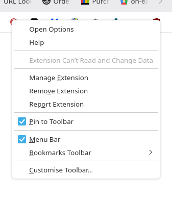
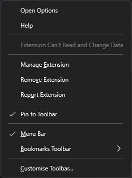
If the Options page is already open, clicking the icon switches to the Options page rather than opening a second copy.
When one or more blocked or warning pages are open, the icon shows a red number badge indicating how many there are. The badge clears automatically once all blocked and warning tabs have been resolved or closed.
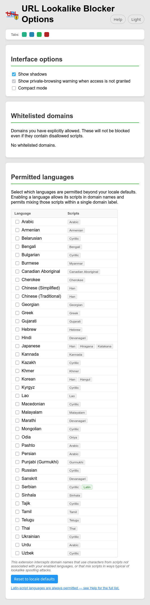
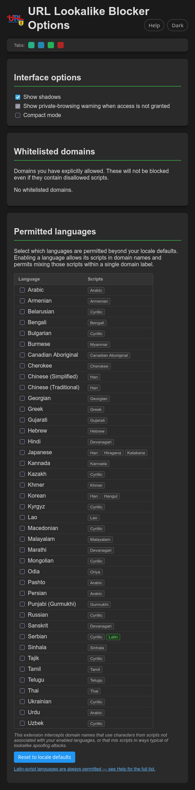
The Options page is where you configure which scripts are permitted, manage your whitelist, and adjust interface options. The sections below appear on the page in the order shown here.
By default, Firefox does not run extensions in private windows. If you use private browsing and want this extension to protect those windows too, you need to enable it manually.
When the extension is not allowed to run in private windows, the Options page shows a warning banner at the top:
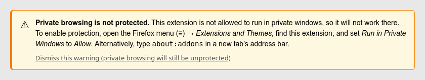
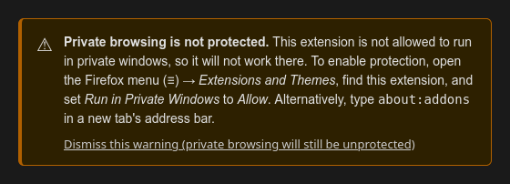
Open the Firefox menu (≡) → Extensions and Themes, find this extension, and set Run in Private Windows to Allow. Alternatively, type about:addons into a new tab's address bar.
If you cannot grant private-window access — for example in a managed Firefox setup where the option is disabled by policy — click Dismiss this warning on the banner, or untick Show private-browsing warning when access is not granted in the Interface options section. The protection itself remains off; dismissing only hides the banner.
When multiple blocked or warning pages are open at once, each tab gets a unique coloured rounded square so you can tell them apart.
When you click Apply changes in Options, the page closes and focus returns to the blocked tab that opened it.

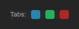
Two visual preferences that take effect immediately when changed, with no Apply step required.
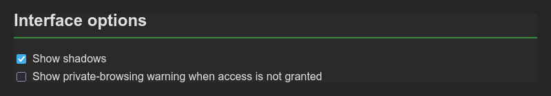
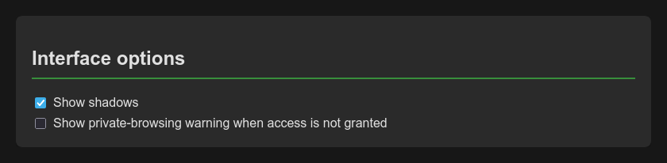
Domains you have explicitly allowed (via "Allow this domain" on a block or warning page) are listed here. You can remove them at any time — the domain will be blocked or warned again on the next visit.
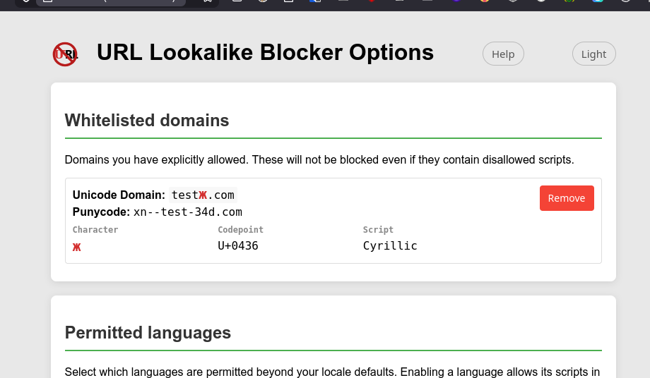
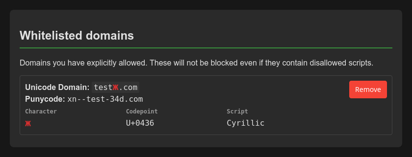
Tick the languages whose scripts (character sets) you want to allow in domain names. Your browser's locale is used as the starting point — so if your Firefox language is set to Japanese, then Japanese is already permitted and the Han, Hiragana, and Katakana scripts are allowed. In addition, Latin is universally permitted regardless of locale, since disabling Latin would block a significant portion of the internet.
Enabling a language does two things: it allows that language's scripts in domain names, and it permits mixing those scripts within a single label (useful for languages like Serbian that legitimately combine Latin and Cyrillic).
Re-checks the languages that match your current Firefox locale setting, and resets to just those language(s). Applied immediately.
Changes to language settings are held in memory until you click Apply changes. The orange "Unsaved changes" dot appears while there are pending edits. Discard changes reverts to the last saved state without closing the page.
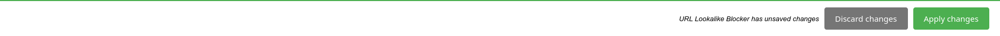
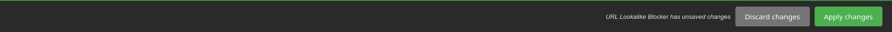
© 2026 Lee MacKinnell
Dual-licensed under MPL-2.0 OR GPL-3.0 — the recipient chooses which terms to comply with. AMO releases are distributed under MPL-2.0.
Source code, full licence text, and contribution notes: github.com/feldegast/url-lookalike-blocker